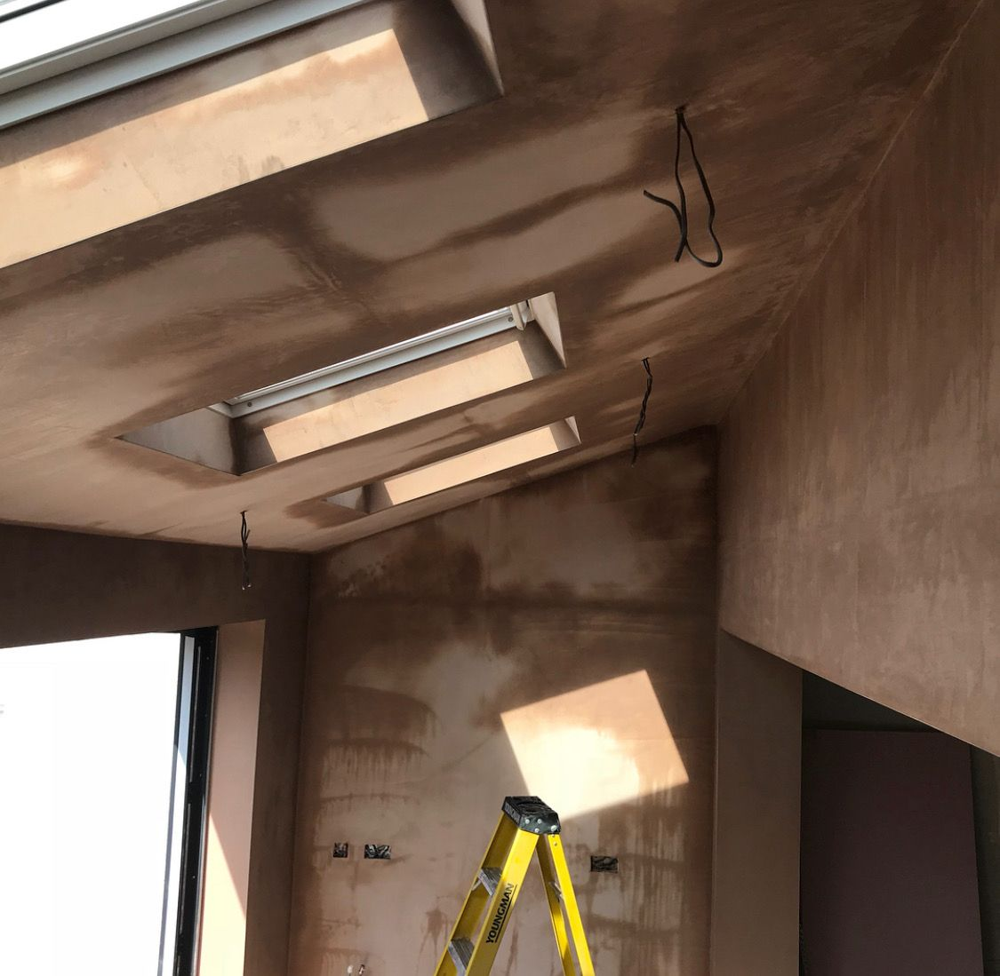
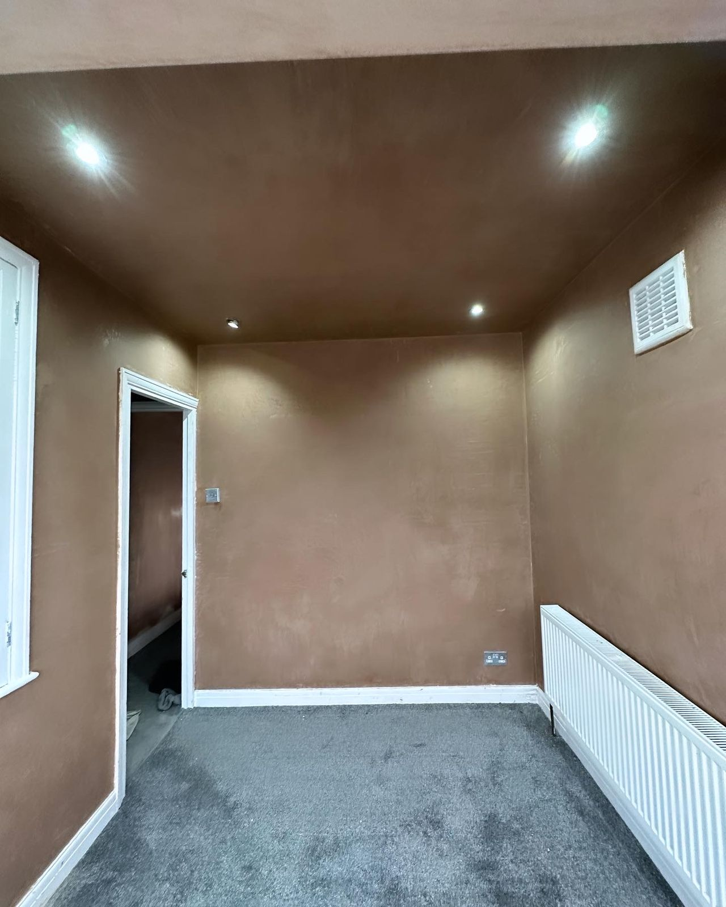
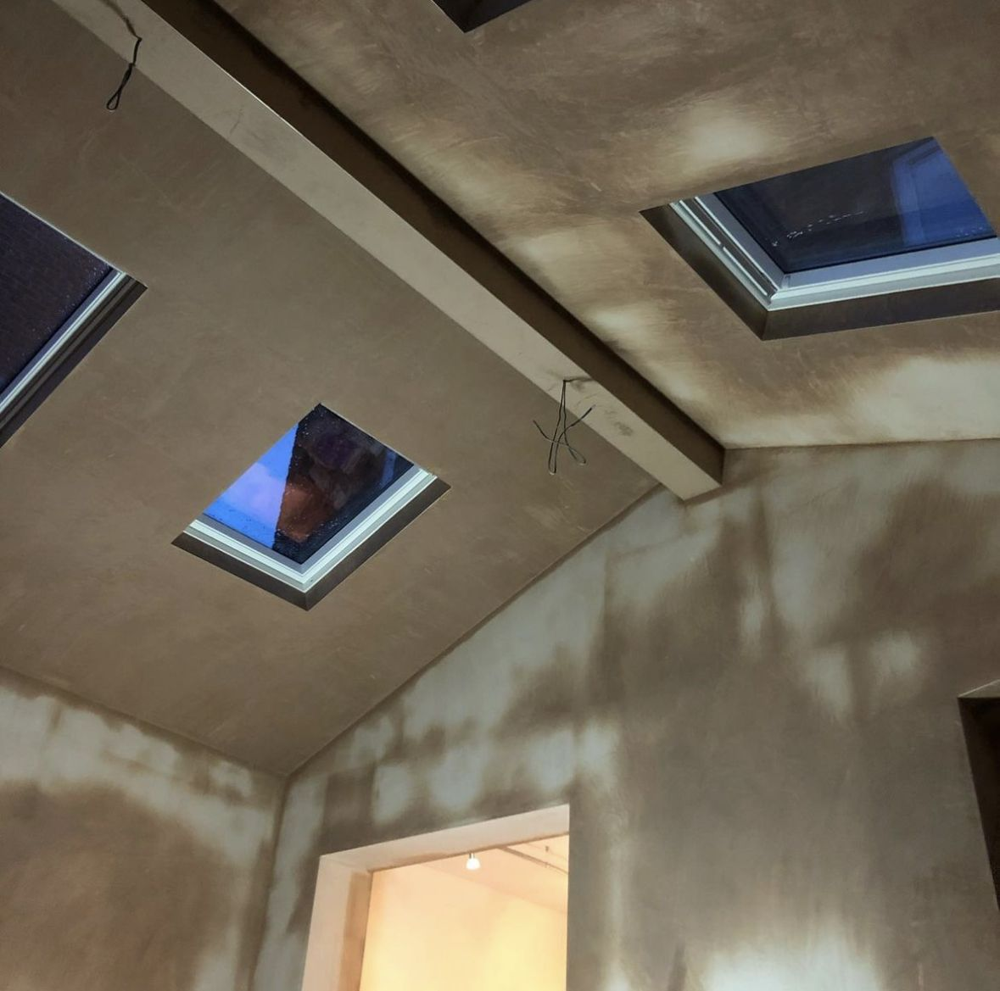

Plastering is in the family
Eighteen years on the tools, a trade passed down through generations, and a simple rule: if it wouldn’t be good enough in our own house, it’s not good enough in yours.

From labouring for family to running the job
James didn’t learn plastering on a six-week course. He learned it the way the trade has always been passed on — mixing, carrying boards and watching trowel work up close, in a family where plastering goes back generations.
Eighteen years later, that apprenticeship has covered commercial sites, domestic renovations and industrial units across Leeds and West Yorkshire. JPS Plastering was set up to do one thing: bring site-level standards into people’s homes.
These days the work runs from full new build properties and renovation projects all the way down to small repair works — and the small jobs get the same treatment as the big ones, because every wall ends up with our name on it whether it’s signed or not.
The standards behind the finish
i. Turn up. Every time.
If we say Tuesday at eight, it’s Tuesday at eight. Customers mention reliability in reviews almost as often as the plastering itself — and we take that personally.
ii. Leave it cleaner than we found it
Plastering is a wet, messy trade. Your house shouldn’t show it. Floors get sheeted, the mixing happens outside where possible, and the mess leaves when we do.
iii. Price it straight
One fair price, quoted free, before any work starts. No call-out fees, no “while we’re here” extras invented halfway through the job.
iv. Right material, right job
Gypsum where gypsum belongs, lime on buildings that need to breathe, silicone render where the weather demands it. The material gets chosen for the wall — not for convenience.
“We offer a full range of plastering services — from new build properties and renovations, all the way down to small repair works.”

Leeds based, West Yorkshire wide
JPS Plastering works out of Winker Green Lodge in Armley, covering the whole of Leeds and surrounding areas. Recent jobs have taken us across LS8, LS10, LS14, LS25 and over to WF17 — if you’re nearby and unsure, it costs nothing to ask.
- Domestic — rooms, renovations, extensions, lofts
- Commercial — shops, offices, sites on programme
- Industrial — units and large-area work

Talk to the person who’ll actually do the work
No sales team, no subcontracting roulette. You speak to James, James prices it, James plasters it.